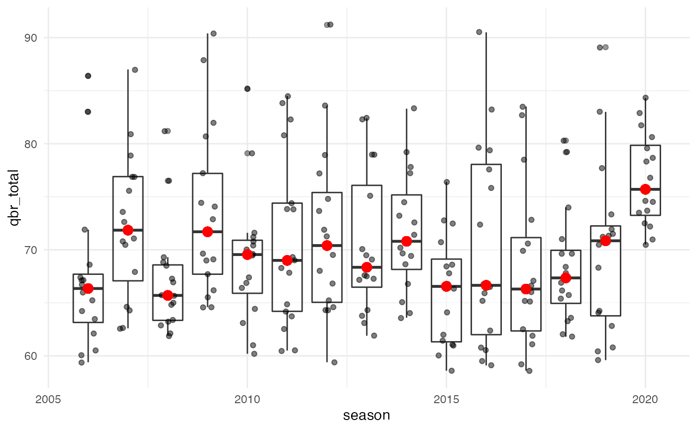

This short guide focuses on using espnscrapeR or the nflverse/espnscrapeR-data repo to access QBR data.
If you have never installed the necessary R packages, go ahead and expand the collapsed section below, otherwise skip ahead to the “Load and Prep” stage.
You’ll need the following packages to get started. Note that as of now, espnscrapeR is not on CRAN so you’ll need to install it from GitHub as seen below.
install.packages(c("tidyverse", "gt", "remotes"), type = "binary")
remotes::install_github("espnscrapeR")Go ahead and load the packages to get started.
library(espnscrapeR)
library(tidyverse)
#> ── Attaching packages ─────────────────────────────────────── tidyverse 1.3.1 ──
#> ✓ ggplot2 3.3.5.9000 ✓ purrr 0.3.4
#> ✓ tibble 3.1.3 ✓ dplyr 1.0.7
#> ✓ tidyr 1.1.3 ✓ stringr 1.4.0
#> ✓ readr 2.0.0 ✓ forcats 0.5.1
#> ── Conflicts ────────────────────────────────────────── tidyverse_conflicts() ──
#> x dplyr::filter() masks stats::filter()
#> x dplyr::lag() masks stats::lag()
library(gt)You can get the data directly from ESPN’s API.
# season level data (1x row per QB per season)
qbr_2020 <- get_nfl_qbr(2020, week = NA)
#> Scraping QBR totals for 2020!But it’ll be easier and recommended to just read in the data directly with either nflreadr or just the raw URL.
nfl_qbr_season <- readr::read_csv("https://raw.githubusercontent.com/nflverse/espnscrapeR-data/master/data/qbr-nfl-season.csv")
#> Rows: 633 Columns: 22
#> ── Column specification ────────────────────────────────────────────────────────
#> Delimiter: ","
#> chr (9): season_type, game_week, team_abb, short_name, first_name, last_nam...
#> dbl (13): season, player_id, rank, qbr_total, pts_added, qb_plays, epa_total...
#>
#> ℹ Use `spec()` to retrieve the full column specification for this data.
#> ℹ Specify the column types or set `show_col_types = FALSE` to quiet this message.This is the QBR values for all QBs at the season level from 2006 to now. The dplyr::glimpse() function can be used to quickly see the type of the columns (IE numeric, character, etc) and the top few values. You can think of it as a beefed up version of the str() function.
nfl_qbr_season %>%
glimpse()
#> Rows: 633
#> Columns: 22
#> $ season <dbl> 2006, 2006, 2006, 2006, 2006, 2006, 2006, 2006, 2006, 20…
#> $ season_type <chr> "Playoffs", "Playoffs", "Playoffs", "Playoffs", "Playoff…
#> $ game_week <chr> "Season Total", "Season Total", "Season Total", "Season …
#> $ team_abb <chr> "NE", "IND", "NO", "NYG", "PHI", "SEA", "NYJ", "DAL", "C…
#> $ player_id <dbl> 2330, 1428, 2580, 5526, 2026, 1575, 2149, 5209, 4480, 73…
#> $ short_name <chr> "T. Brady", "P. Manning", "D. Brees", "E. Manning", "J. …
#> $ rank <dbl> 1.0, 2.0, 3.0, 4.0, 5.0, 6.0, 7.0, 8.0, 9.0, 10.0, 11.0,…
#> $ qbr_total <dbl> 83.0, 71.9, 68.7, 63.8, 59.8, 55.5, 52.5, 40.0, 30.5, 22…
#> $ pts_added <dbl> 12.8, 9.4, 3.1, 1.3, 2.8, 0.8, -0.6, -1.8, -5.5, -2.4, -…
#> $ qb_plays <dbl> 135, 174, 92, 38, 76, 79, 47, 34, 102, 35, 35, 31, 624, …
#> $ epa_total <dbl> 19.9, 18.6, 7.5, 3.4, 7.2, 5.4, 1.8, 0.2, 0.5, -0.3, -1.…
#> $ pass <dbl> 16.9, 15.9, 6.2, 1.9, 6.8, 2.8, 3.0, -0.9, -1.0, -0.7, -…
#> $ run <dbl> 0.4, -0.6, -0.5, 0.3, -1.1, 0.0, -2.1, 0.0, -1.0, 0.3, 0…
#> $ exp_sack <dbl> 0, 0, 0, 0, 0, 0, 0, 0, 0, 0, 0, 0, 0, 0, 0, 0, 0, 0, 0,…
#> $ penalty <dbl> 0.3, 1.2, -0.9, 0.5, -0.2, 1.5, 0.2, 0.1, 0.1, -0.1, 0.0…
#> $ qbr_raw <dbl> 79.2, 68.2, 61.7, 61.7, 62.6, 53.5, 45.5, 32.1, 31.9, 27…
#> $ sack <dbl> -2.2, -2.1, -2.7, -0.6, -1.6, -1.1, -0.6, -1.1, -2.4, -0…
#> $ first_name <chr> "Tom", "Peyton", "Drew", "Eli", "Jeff", "Matt", "Chad", …
#> $ last_name <chr> "Brady", "Manning", "Brees", "Manning", "Garcia", "Hasse…
#> $ name <chr> "Tom Brady", "Peyton Manning", "Drew Brees", "Eli Mannin…
#> $ headshot_href <chr> "https://a.espncdn.com/i/headshots/nfl/players/full/2330…
#> $ team <chr> "Patriots", "Colts", "Saints", "Giants", "Eagles", "Seah…We can group_by() the season and find the median QBR per season.
nfl_qbr_season %>%
group_by(season) %>%
summarize(qbr_median = median(qbr_total), .groups = "drop")
#> # A tibble: 15 × 2
#> season qbr_median
#> <dbl> <dbl>
#> 1 2006 55.5
#> 2 2007 59.8
#> 3 2008 56.6
#> 4 2009 65.2
#> 5 2010 55.8
#> 6 2011 54
#> 7 2012 52.8
#> 8 2013 58.7
#> 9 2014 59.3
#> 10 2015 57.2
#> 11 2016 56.6
#> 12 2017 55.8
#> 13 2018 57.6
#> 14 2019 56.7
#> 15 2020 68.4We can also group_by() the season and find the max n values per season.
top_16_per_yr <- nfl_qbr_season %>%
select(season, team_abb, short_name, qbr_total) %>%
# group by season
group_by(season) %>%
# get top 16
slice_max(order_by = qbr_total, n = 16) %>%
# add the grouped median
mutate(qbr_median = median(qbr_total)) %>%
ungroup()
top_16_per_yr
#> # A tibble: 240 × 5
#> season team_abb short_name qbr_total qbr_median
#> <dbl> <chr> <chr> <dbl> <dbl>
#> 1 2006 IND P. Manning 86.4 66.4
#> 2 2006 NE T. Brady 83 66.4
#> 3 2006 IND P. Manning 71.9 66.4
#> 4 2006 NO D. Brees 68.7 66.4
#> 5 2006 NE T. Brady 68.6 66.4
#> 6 2006 SD P. Rivers 67.4 66.4
#> 7 2006 CIN C. Palmer 67.1 66.4
#> 8 2006 NO D. Brees 66.7 66.4
#> 9 2006 BAL S. McNair 66 66.4
#> 10 2006 NYJ C. Pennington 64.2 66.4
#> # … with 230 more rowsWe can then visualize this with a quick ggplot.
top_16_per_yr %>%
ggplot(aes(x = season, y = qbr_total, group = season)) +
geom_boxplot(alpha = 0.5) +
geom_jitter(width = 0.2, alpha = 0.5) +
geom_point(aes(y = qbr_median), color = "red", size = 3) +
theme_minimal()
Alternatively you can also find the median by quarterback.
nfl_qbr_season %>%
group_by(short_name) %>%
summarize(
median = median(qbr_total),
years = range(season) %>% paste0(collapse = "-"),
active = if_else(max(season) == 2020, "Active", "Retired"),
.groups = "drop"
) %>%
arrange(desc(median))
#> # A tibble: 124 × 4
#> short_name median years active
#> <chr> <dbl> <chr> <chr>
#> 1 P. Mahomes 80.4 2018-2020 Active
#> 2 P. Manning 74.6 2006-2015 Retired
#> 3 D. Prescott 72.8 2016-2019 Retired
#> 4 T. Brady 72.5 2006-2020 Active
#> 5 D. Watson 70.5 2018-2020 Active
#> 6 A. Rodgers 70.4 2008-2020 Active
#> 7 J. Herbert 69.5 2020-2020 Active
#> 8 D. Brees 68.9 2006-2020 Active
#> 9 K. Warner 68.5 2007-2009 Retired
#> 10 M. Ryan 67.3 2008-2020 Active
#> # … with 114 more rows